Visite a casa
Um casarão histórico no Centro Histórico de Curitiba, em frente à Praça João Cândido. Abaixo, tudo para planejar a sua visita.
Av. Jaime Reis, 480
Bairro São Francisco, Centro Histórico, Curitiba, PR · CEP 80510-010
Em frente à Praça João Cândido
Horários de funcionamento
- Quinta-feira17h às 23h
- Sexta-feira17h às 23h
- Sábado15h à meia-noite
- Domingo12h às 17h, com feijoada
- Segunda a quartaFechado ao público · eventos fechados sob consulta
Pagamento e estrutura
Aceitamos cartão de crédito, cartão de débito e pagamento por aproximação. O casarão histórico conta com área interna, quintal de convivência e sanitários.
Av. Jaime Reis, 480 · São Francisco
O mapa interativo não carregou. Você pode abrir o endereço direto no Google Maps.
Abrir no Google MapsDúvidas frequentes
Antes de chegar
Não achou a sua resposta? Chame a casa no Instagram ou pelo formulário de contato.
Falar com a casaPreciso de reserva para visitar a casa?
Não. A casa funciona por ordem de chegada nos horários de abertura. Para eventos fechados e grupos, fale com a produção pelo formulário de contato.
Quais formas de pagamento são aceitas?
Cartão de crédito, cartão de débito e pagamento por aproximação, com NFC e carteiras digitais.
A entrada é gratuita?
Muitos encontros da programação são gratuitos, como rodas de samba e batalhas de rima. Alguns eventos especiais podem ter cobrança de entrada. A agenda atualizada sai toda semana no Instagram @alaafia_casa.
Como chego à casa?
A Casa Cultural Àlàáfíà fica na Av. Jaime Reis, 480, no bairro São Francisco, Centro Histórico de Curitiba, em frente à Praça João Cândido. Use o botão Traçar rota nesta página para abrir o caminho no Google Maps.
Posso propor um evento ou uma apresentação?
Sim. Artistas, coletivos e comunidades podem enviar propostas pelo formulário de contato ou pelo Instagram @alaafia_casa.
A porta está aberta. Caminhos abertos.
De quinta a domingo, no coração do Centro Histórico.